Your step-by-step guide For professionals and companies
Welcome · A4 print & PDF · March 2026
Quick start (5 minutes)
Create your account.
Complete your profile.
Create your first opportunity.
Publish it.
Review your matches.
Accept a match to start working together.
The sections below walk through each screen in plain language.
1. Platform overview
What this page is about
PMTwin helps professionals and companies find each other, agree on work, and track delivery—starting from an opportunity (what you need or offer), through suggested matches, then a deal and contract when you are ready.
What you can do here
Post what you need or what you offer.
See suggestions that fit your post.
Agree with others and manage the work in one place.
Step-by-step actions
Use this guide in order, or jump from the table of contents to any topic.
What happens next
Continue to the next section in order, or open any topic from the table of contents. The diagram below shows the typical path from sign-up to completion.
People join as a company or as an individual. Individuals often choose Professional or Consultant depending on how they work.
What you can do here
Company: Represent your organization; post needs or offers on behalf of the business.
Professional: Offer your skills and respond to opportunities.
Consultant: Same idea, with a focus on advisory or expert services.
Step-by-step actions
👉 What to do
After you sign in, open Profile.
Make sure your details match how you work (company vs individual).
Save if you changed anything.
What happens next
Others will see your role type when you connect. You can update Profile later if your situation changes.
Tips
If your organization reviews new accounts, you may need approval before everything is available.
2. Account & sign in
2.1 Registration
What this page is about
The sign-up screens walk you through creating an account. You choose whether you are a business or an individual, then fill in the questions step by step.
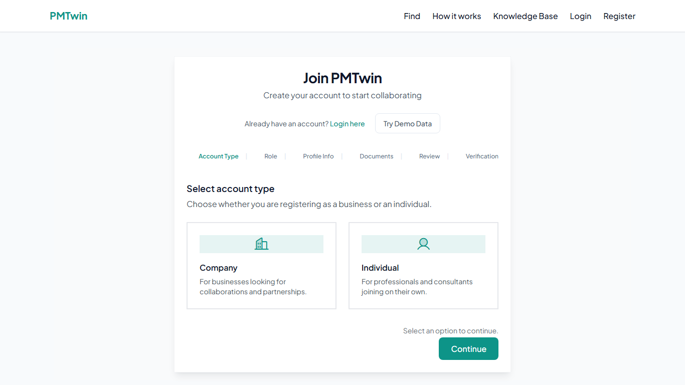
Figure 1 — Registration.
What you can do here
Enter your email and a secure password.
Add your name or company name and the details the form asks for.
Accept the terms when asked.
Step-by-step actions
👉 What to do
Open Register from the welcome screen.
Choose company or individual and complete each step.
Click submit. If your organization reviews new accounts, wait for confirmation before everything is unlocked.
What happens next
You can sign in once your account is active; watch your email or in-app messages for approval if your organization requires it.
Tips
Use an email you check often.
Keep your password private.
2.2 Login
What this page is about
The login page is where you enter your email and password to open PMTwin.
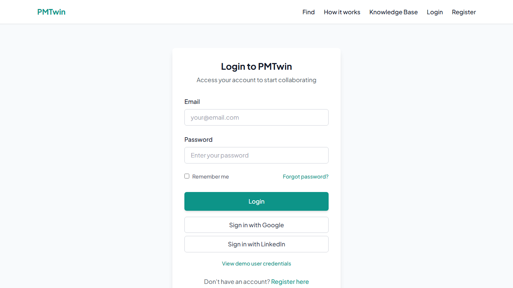
Figure 2 — Login.
What you can do here
Sign in with your email and password.
Use Forgot password if you need to reset.
Step-by-step actions
👉 What to do
Open Login.
Enter your email and password.
Click Login.
What happens next
You are redirected to your dashboard, where you can access Opportunities, Matches, and your Pipeline.
sequenceDiagram
participant You
participant PMTwin
You->>PMTwin: Email and password
PMTwin-->>You: Open your home page
3. Profile
What this page is about
Your profile is your public-facing introduction. It helps others understand who you are and what you do before they connect with you.
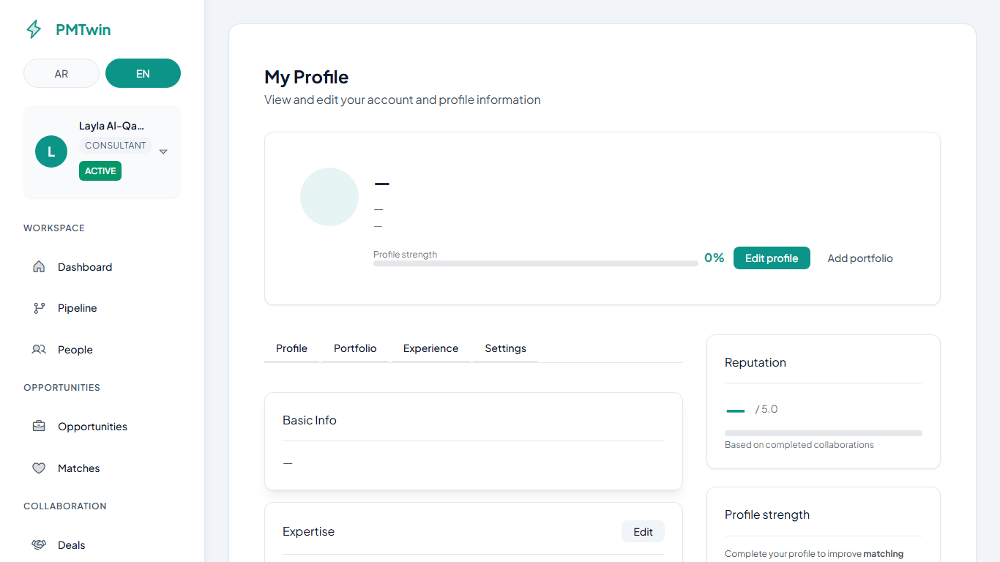
Figure 3 — Profile.
Why it matters
A strong profile leads to clearer conversations and better suggestions when people compare your skills to their needs.
Example (strong profile)
Example
Skills: Structural Engineering, AutoCAD, Revit
Experience: 8 years in construction projects
Certifications: PMP, PE License
What you can do here
Skills — what you actually deliver (be specific).
Experience — years and roles that support your skills.
Certifications — licenses or certificates that matter in your field.
Languages — how you communicate.
Social links — for example LinkedIn or a portfolio site.
Step-by-step actions
👉 What to do
From the side menu, open Profile.
Fill in or update the fields.
Save before you leave the page.
What happens next
Your profile becomes visible to others and helps improve your matches.
Tips
Add 10–15 clear skills instead of one long vague list.
Update your profile when your focus changes.
Common mistakes
Adding too few skills
Using generic titles like "Engineer"
Leaving the profile incomplete
4. Home (Dashboard)
What this page is about
The home page is your starting point after login. It shows useful counts and shortcuts.
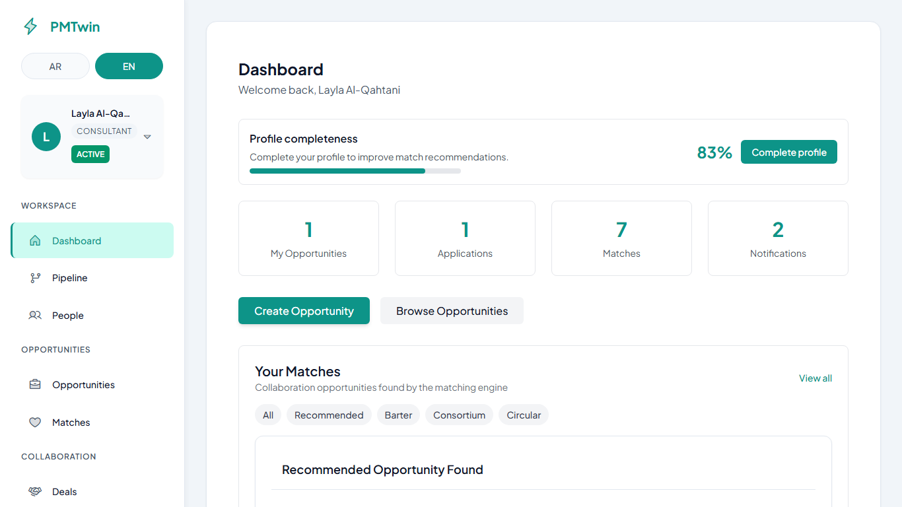
Figure 4 — Home dashboard.
What you can do here
See summaries of your opportunities, matches, applications, and alerts.
Jump to common tasks from cards or the side menu.
Step-by-step actions
👉 What to do
Use the left menu to go to Pipeline, Opportunities, Matches, Deals, Contracts, Notifications, or Profile.
Or tap a summary card on the home page if it takes you where you want to go.
What happens next
You move to the screen you chose; counts on the dashboard refresh when you return to Home.
5. Opportunities
What this page is about
An opportunity is your post: what you are looking for, what you offer, or both. When you publish, others can discover it and the system can suggest good fits.
Matching depends on clarity: clear skills, realistic budget, and timeline help you get better matches.
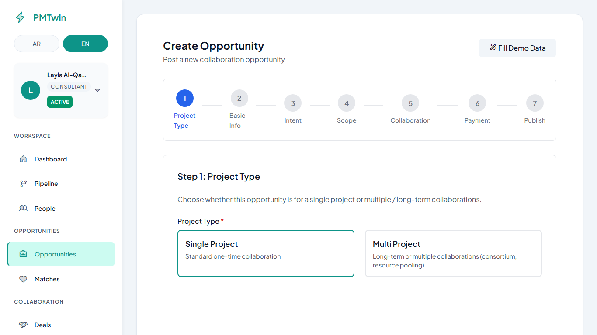
Figure 5 — Create opportunity.
Example (good opportunity)
Example
Title: Need structural engineer for shop drawing review
Skills: Structural Engineering, AutoCAD
Budget: 5,000 – 10,000 SAR
Timeline: 2 months
Common mistakes
Using vague titles like "Need help"
Not adding enough skills
Unrealistic budget or missing timeline
5.1 Create opportunity — step by step
The form is a wizard: follow the steps at the top and use Next and Back. Fields marked with * are required.
Step 1 — Project type
What you select
Single project (one clear piece of work) or Multi project (ongoing program or several related collaborations).
What it means
It sets the tone—short engagement vs longer-term partnership.
Step 2 — Basic information
Title — Short, clear headline. Description — Enough detail that someone understands scope and expectations.
Location & how you work — Where work happens and whether it is on-site, remote, or hybrid. Dates (if shown) — Start, deadline, or end dates help others see timing.
Example
Field
Example
Title
Need structural engineer for shop drawing review
Skills (later step)
Structural Engineering, AutoCAD
Budget (later step)
5,000 – 10,000 SAR
Timeline
About 2 months
Tips: Use a clear title. Add real skills. Set a realistic budget and timeline.
Step 3 — Intent
Need — You are looking for something. Offer — You provide something. Need + Offer — Both apply (for example exchange-style setups).
What it means: It helps steer who should see your post and how suggestions are found.
Step 4 — Scope
Skills and tags — List what matters for delivery. Skills are important because they describe the work in words others search for.
Sectors and interests — Extra context so the right people notice your post.
Step 5 — Collaboration model
Choose the type of collaboration (for example project-style, partnership, hiring, or competition-style). Follow the questions and fill any extra fields that appear.
What it means: Different setups ask different follow-up questions so the form matches your situation.
Step 6 — Payment & value
Set your budget range and how value is exchanged (cash, equity, profit-sharing, barter, or a mix). This helps others see if the opportunity fits them.
Step 7 — Review & publish
Check everything. Then either save as draft (only you can see it) or publish (others can find it and suggestions can appear).
Step-by-step actions
👉 What to do
Open Opportunities → Create.
Complete each wizard step.
On the last step, choose Publish when you are ready, or save as draft to keep working privately.
What happens next
A published post can be discovered and matched; a draft stays visible only to you until you publish.
Note:
After publishing, the system automatically generates matches. Check the Matches page within a few minutes.
flowchart LR
Draft[Draft] --> Publish[Publish]
Publish --> Suggestions[Suggestions appear]
Suggestions --> Alerts[You may get alerts]
5.2 Draft vs publish (short)
Draft — Work in private; nothing is visible for matching.
Publish — Your post is live; others can discover it and you can receive suggestions.
Common mistakes (draft vs publish)
Choosing the wrong intent (need vs offer) for what you actually want.
Leaving the opportunity in draft and expecting matches to appear.
6. Matches
What this page is about
A match is a suggested collaboration based on your opportunity and another party’s opportunity. It is a starting point—not a final agreement.
Flow: Opportunity → Match → Deal → Contract
Figure 6 — Matches.
What you see
A match score — how closely the suggestion fits (higher usually means a better fit).
The other party and short context.
The type of match (for example simple pairing, barter-style, group, or chain-style).
What affects the score (plain language)
Mainly: how well skills line up, whether budgets and timing make sense together, location and work mode, and trust signals when available. Small changes in your post can change the score.
What you can do here
Open a match to read details.
Accept or decline.
Step-by-step actions
👉 What to do
Open Matches from the menu.
Click a row to open the full match details.
What happens next
You see the match detail screen where you can read the summary, compare scores, and choose your next action. If you accept and all participants accept, a deal is created automatically.
Tips
If you see few or no suggestions, widen skills slightly or adjust budget and dates, then publish again.
Common mistakes
Ignoring the match score and context before accepting or declining.
Declining without reading whether the fit is barter, chain, or simple pairing.
Expecting new suggestions without adjusting a vague opportunity or unpublished post.
7. Match details
What this page is about
This screen explains one suggestion: who is involved, what is being exchanged, and your choices.
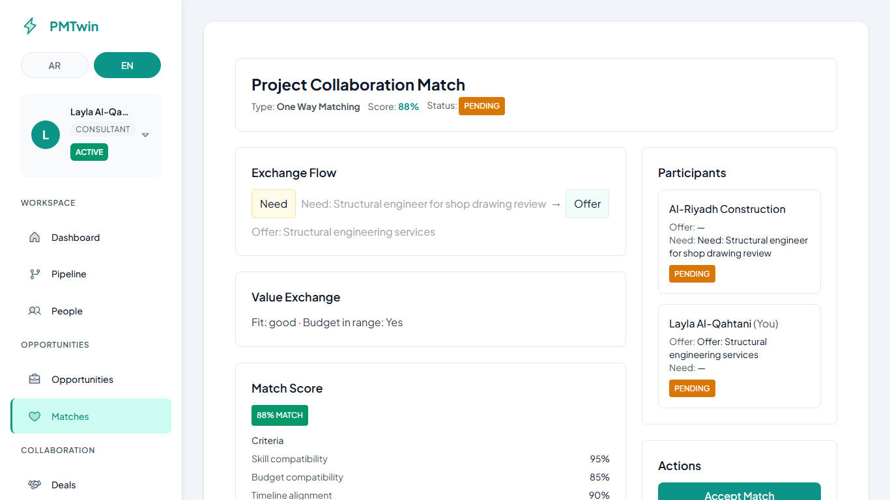
Figure 7 — Match details.
What you can do here
Accept Match — You agree to move forward with this suggestion.
Decline — You close this suggestion.
Message or Start negotiation — When shown, use these to talk things through.
Step-by-step actions
👉 What to do
From Matches, open a match.
Read the summary.
Click Accept Match or Decline.
Remember: everyone involved must accept before the next step.
What happens next
If you declined, the suggestion closes. If you accepted, the match stays open until all parties respond; when all accept, a deal is created.
Important:
A deal is only created when all participants accept the match.
Some opportunities let people apply instead of only receiving automatic suggestions. Applications are requests you send or receive to join or bid on an opportunity.
Matches vs applications (simple)
Who starts it
When to use it
Suggestions (Matches)
The service suggests pairs for you
You want ideas based on your published post
Applications
A person applies to your post (or you apply to theirs)
You want formal inbound interest or you want to apply
What you can do here
Track applications on the Pipeline Applications tab.
Move cards between columns when the page allows, to reflect review stages.
Step-by-step actions
👉 What to do
Open Pipeline → Applications tab.
Move cards between columns when permitted.
What happens next
Card positions reflect review stages; open a card or related opportunity when you need more detail.
9. From match to deal
What this page is about
After everyone accepts a match, you move from “we might work together” to “let’s manage this in a deal.”
What happens
When the last person accepts, a deal is created automatically for the group. Open it from Deals if you are not taken there directly.
Step-by-step actions
👉 What to do
Complete acceptance on the match screen.
Open Deals.
Continue planning scope, timing, and next steps there.
What happens next
A new deal appears for your group; you work there until milestones and contracts pick up the detail.
10. Deals
What this page is about
The deal is where you manage the agreement: scope, timing, value, and progress. Think of it as your shared workspace for the collaboration.
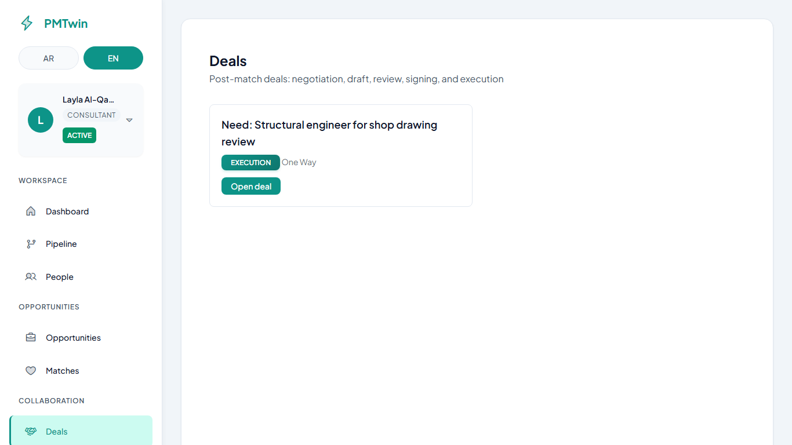
Figure 8 — Deals list.
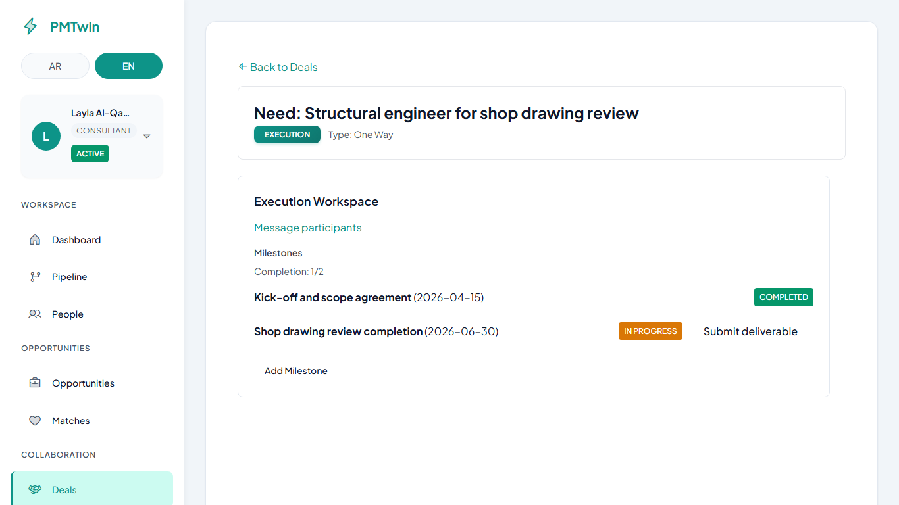
Figure 9 — Deal detail.
What you can do here
See who is involved and what was agreed in principle.
Move through stages from discussion to signing and execution.
Track deliverables and milestones (see next section).
Stages (simple words)
Discussion — Align on needs and terms.
Agreement — Shape scope, value, and timeline.
Execution — Do the work and track milestones.
Completion — Close out when work is done.
Step-by-step actions
👉 What to do
Open Deals and choose your deal.
Use the buttons and sections on the page to advance and update information.
What happens next
The deal moves through discussion, agreement, signing, and execution as your group completes each stage. When ready, you move to the contract stage for signatures and proceed to the contract for signing.
Milestones break the work into steps with dates and deliverables. You manage them inside the deal—there is no separate milestones home page.
What you can do here
Add or review milestones (title, date, what must be delivered).
Submit work for review when ready.
Approve or ask for changes, depending on your role.
Step-by-step actions
👉 What to do
Open your deal.
Find the milestones section.
Update or submit as guided on screen.
What happens next
Statuses update as work moves from not started to submitted and approved (or sent back for changes).
Status words you may see
Not started → In progress → Submitted → Approved (or sent back for changes).
12. Contracts
What this page is about
The contract is the official agreement between all parties. It records scope, payment, and timeline in one place.
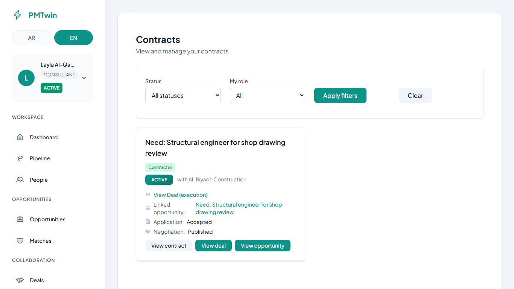
Figure 10 — Contracts.
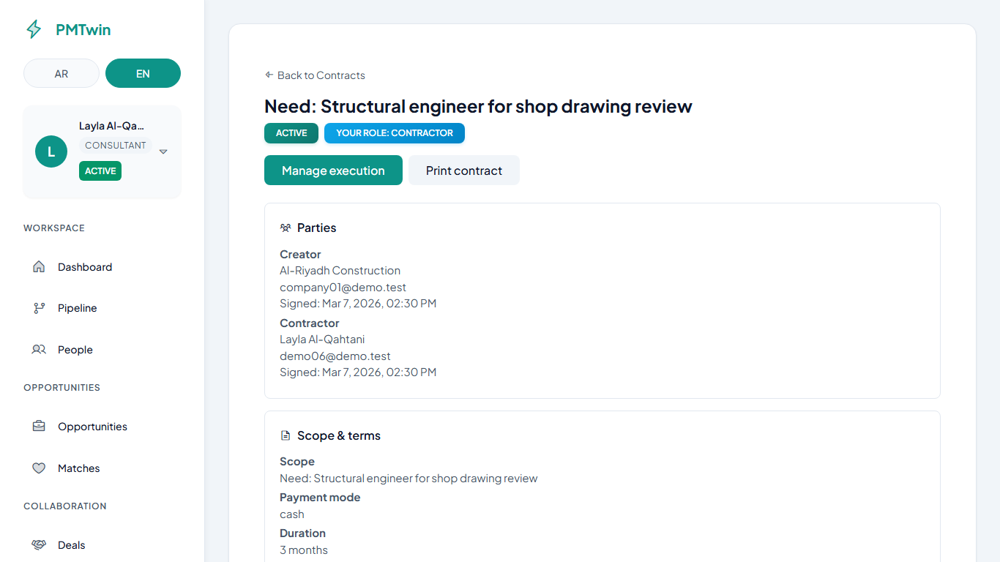
Figure 11 — Contract detail.
What you can do here
Read parties, scope, value, and dates.
Complete signing steps when it is your turn.
Step-by-step actions
👉 What to do
Open Contracts.
Select your contract.
Follow the signing prompts for your role.
What happens next
Once signed, work continues under the deal. Once signed, the contract activates the deal execution.
stateDiagram-v2
[*] --> waiting[Waiting for signatures]
waiting --> active[Active]
active --> done[Completed]
13. Notifications
What this page is about
Notifications keep you updated about matches, deals, contracts, and account messages—so you do not miss important steps.
Figure 12 — Notifications.
What you can do here
Read new updates.
Open the related page from a notification when a link is provided.
Step-by-step actions
👉 What to do
Open Notifications from the menu.
Tap an item to go to the related screen.
What happens next
You land on the page tied to that notification (match, deal, contract, or message).
14. Pipeline
What this page is about
The pipeline helps you track your opportunities and applications on boards. You can see what is draft, live, in progress, or closed at a glance.
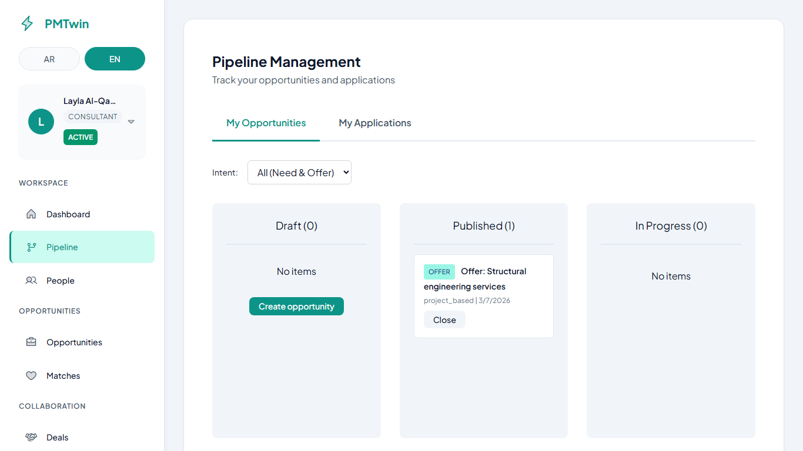
Figure 13 — Opportunities board.
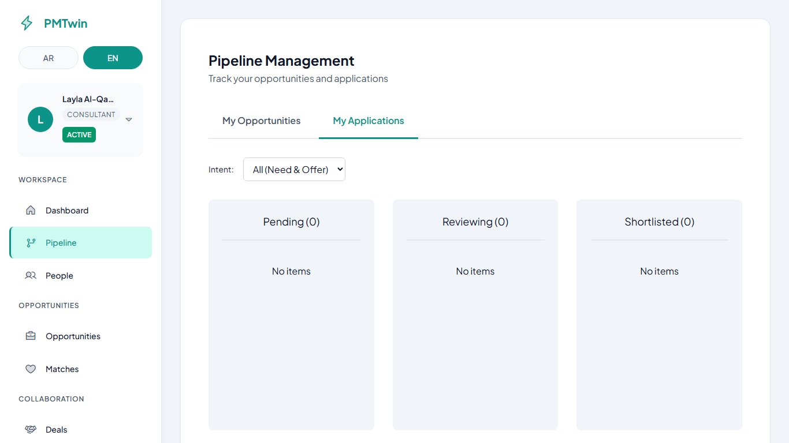
Figure 14 — Applications board.
Opportunities columns (simple)
Draft — Not published yet.
Published — Live for others to find.
In progress — Active discussion or negotiation.
Closed — Finished on this board.
Applications columns (simple)
Columns follow the review journey—for example pending, reviewing, shortlisted, in discussion, accepted, or not selected. Labels may vary slightly by screen.
What you can do here
Drag a card to another column when the page allows, to update its stage.
Use this view together with Matches for suggestions (matches are not managed on this board).
Step-by-step actions
👉 What to do
Open Pipeline.
Switch between Opportunities and Applications tabs.
Drag cards only when you intend to change the stage shown.
What happens next
Column labels update to reflect each item’s stage; use Matches for suggestions (they are not managed on this board).
15. Your journey from start to finish
What this page is about
A single checklist of the full path from signup to finishing work.
What you can do here
Use it as a reminder or training checklist in order.
Step-by-step actions
Create your account.
Fill in your profile.
Create an opportunity and save a draft if you need time.
Publish when you are ready.
Review matches and talk to others if needed.
Accept when everyone agrees.
Work in the deal and sign the contract when offered.
Complete milestones and close out.
What happens next
Use this list as a checklist; revisit earlier steps whenever your situation changes (for example updating your profile or republishing an opportunity).
Tips
You can return to any earlier step if your situation changes (for example updating your profile or republishing an opportunity).
16. Tips for success
What this page is about
Short habits that improve results on PMTwin.
What you can do here
Apply these before you publish and while you collaborate.
Step-by-step actions
Use clear titles and real skills.
Set budgets and dates you can stand behind.
Reply to matches and messages promptly.
Keep your profile up to date.
What happens next
Apply these habits before each publish and during collaboration; you should see clearer matches and fewer misunderstandings over time.
Tips
Re-read your opportunity title and skills in the review step every time before you publish.
17. Common mix-ups
What this page is about
Typical pitfalls and how to read them.
What you can do here
Use this list when results feel off—often the fix starts with profile or opportunity wording.
Step-by-step actions
Empty profile — harder for others to trust or suggest good fits.
Wrong “need” vs “offer” — you may see less relevant suggestions.
Leaving everything in draft — nothing is visible to match.
Ignoring notifications — you may miss a time-sensitive step.
What happens next
When something feels off, work through profile wording, then opportunity intent and skills, then republish—most issues improve in that order.
Tips
If suggestions seem wrong, fix your profile first, then intent and skills on the opportunity, then publish again.
18. When something looks unclear
What this page is about
Plain answers when a screen or outcome is confusing.
What you can do here
Match your situation to one of the notes below and follow the implied next step.
Step-by-step actions
Only some people accepted — The suggestion stays open until everyone accepts, or someone declines.
No suggestions yet — Adjust skills or timing, make sure you published, and check again later.
You declined — That suggestion closes; you can focus on other posts or publish an updated opportunity.
Deal feels stuck — Return to scope and dates in the deal, and message the other party.
Contract not moving — Make sure each party has completed their signing steps.
What happens next
Follow the implied next step for your situation (refresh, adjust and republish, or complete signing in order).
Tips
Refresh the page or open the list view again if a screen did not update after you took an action.
19. Words you might see
What this page is about
Short explanations in everyday language—no need to memorize anything.
What you can do here
Refer back when a label on screen is unfamiliar.
Step-by-step actions
Draft — Saved but not live for others yet.
Published — Your opportunity is visible so people can find it.
Match / suggestion — A recommended pairing based on your post and someone else’s.
Deal — Where you manage the work after people agree to collaborate.
Contract — The signed agreement that captures scope, payment, and timing.
What happens next
When a label on screen is unclear, match it to these meanings and continue with the task you were doing.
Tips
The app may use slightly different wording in places; focus on whether something is saved, published, or signed.